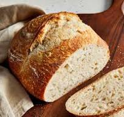

A 28 year old aspiring baker hailing from Seattle.Denzel discovered his love for baking at the tender age of 10 when he baked his first batch chocolate chip cookies with his grandmother.The joy of creating something delicious from scratch enthralled him. Over the years,he honed his skills by experimenting with various recipes and even creating some of his own. His dream is to share the joy of baking with others and inspire them to create their own baked wonders.
A delicate pastry filled with the sweet nutty goodness of almond paste,dusted with powdered sugar,and baked to golden perfection
Ingredients: 1 sheet of puff pastry,1/2 cups of almond paste,1/4 cup of powdered sugar,1 egg(for egg wash)

A community favorite,boasting a crusty exterior and a soft,airy interior,embodying the classic sourdough charm.
Ingredients:1 cup sourdough starter,1 1/2 cups warm water, 4 cups bread flour,1 1/2 teaspoons salt